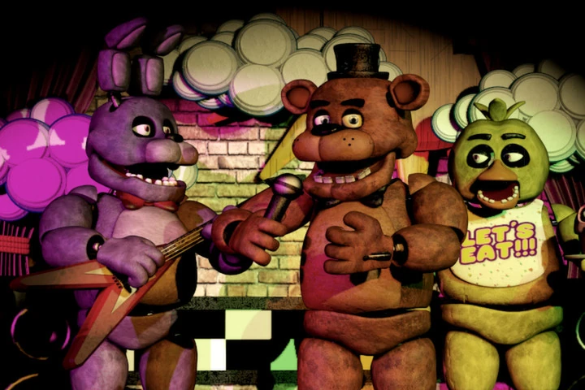
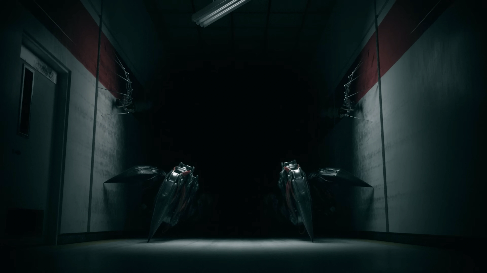

Navegue pelos temas:
1. Five Nights at Freddy's e o Fazbear Fanverse
Five Nights at Freddy's (FNAF) é, sem dúvidas, uma das minhas franquias favoritas de terror. O que mais me atrai no jogo é a sua história rica em detalhes e a imensa quantidade de teorias criadas pela comunidade ao longo dos anos, conseguindo criar um terror de forma subjetiva.

A franquia expandiu-se além dos jogos originais de Scott Cawthon, dando espaço para o projeto Fazbear Fanverse Initiative. Projetos mantidos por fãs ganharam reconhecimento oficial, trazendo jogos incríveis como The Joy of Creation, que eleva o nível do terror com gráficos surpreendentes e uma jogabilidade intensa.
Vídeo em Destaque
2. Poppy Playtime e o Mistério das Indústrias Playtime
Assim como FNAF, Poppy Playtime se destaca por apresentar uma lore profunda e cheia de segredos escondidos em fitas VHS, pôsteres e cenários abandonados.
Gosto muito da experiência de desvendar mistérios e montar o quebra-cabeça das teorias à medida que novos capítulos e personagens são lançados. A atmosfera da fábrica de brinquedos traz um contraste marcante entre infância e horror psíquico.

3. Outras Franquias Marcantes
Além do terror focado em mascotes e animatrônicos, acompanho e aprecio diversos outros universos marcantes nos games:
- Dead by Daylight: Excelente experiência de sobrevivência multijogador com diversos ícones do terror clássico.
- The Outlast Trials: Terror psicológico intenso e atmosfera opressiva em cooperação.
- The Backrooms: A exploração do desconhecido em espaços liminares e terror analógico.
- Deltarune: RPG com narrativa única, ótimos personagens e mistérios envolventes.
- Far Cry 5: Uma experiência focada em exploração, ação em mundo aberto e construção de vilões marcantes.